Foi neste ano que tudo começou. Adair Dutra, com sua experiência em vendas e profundo senso de responsabilidade, iniciou as atividades como representante comercial de equipamentos de segurança.
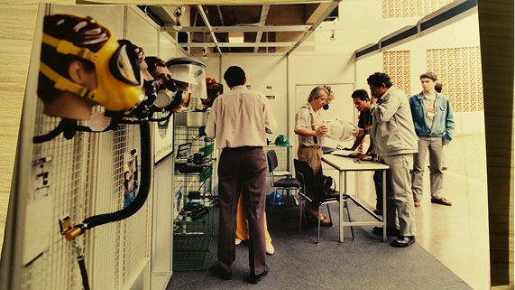Foi neste ano que tudo começou. Adair Dutra, com sua experiência em vendas e profundo senso de responsabilidade, iniciou as atividades como representante comercial de equipamentos de segurança.
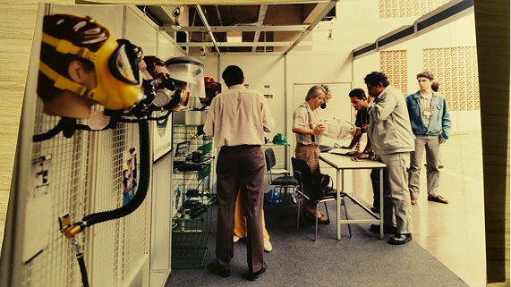Com crescimento consistente e credibilidade no mercado, nasce oficialmente a Racco Comércio e Representações Ltda, já com foco no atendimento técnico e consultivo a empresas da indústria pesada. Esse passo representou a transformação de uma atuação individual em uma estrutura empresarial sólida.
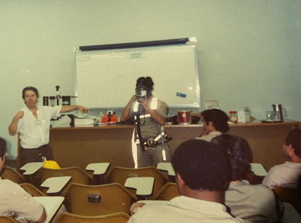A empresa estabelece sua primeira grande parceria internacional, com a norte-americana Pelican Products, referência mundial em lanternas profissionais e cases de proteção. Isso ampliou o portfólio da Racco e fortaleceu seu posicionamento como fornecedora de soluções confiáveis para ambientes extremos.
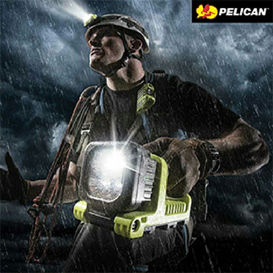A solidez do trabalho e a dedicação da família Dutra resultam na conquista de uma sede própria, em Belo Horizonte, MG. O espaço se tornou símbolo do compromisso com o crescimento sustentável e a valorização de relações de confiança com clientes, fornecedores e colaboradores.
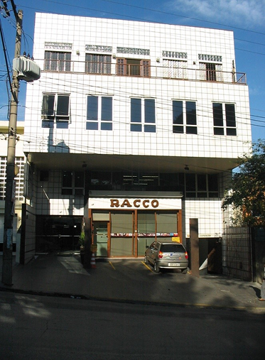Com espírito visionário e paixão pelo conhecimento, Adair cria o Infoseg, um informativo técnico digital pioneiro que alcançou mais de 20 mil leitores. O objetivo era simples, mas grandioso: levar conteúdo técnico de qualidade sobre segurança do trabalho ao maior número possível de profissionais.
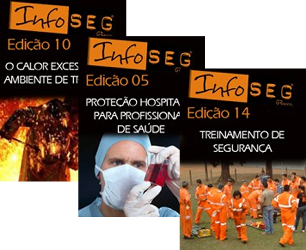Após uma batalha contra o câncer, Adair Dutra falece, deixando um legado humano e profissional imensurável. Sua esposa, Maria Antônia, e os filhos, Fernando, Paula e Leonardo, assumem a continuidade da empresa, determinados a manter vivos os valores que o fundador cultivou com tanta dedicação.
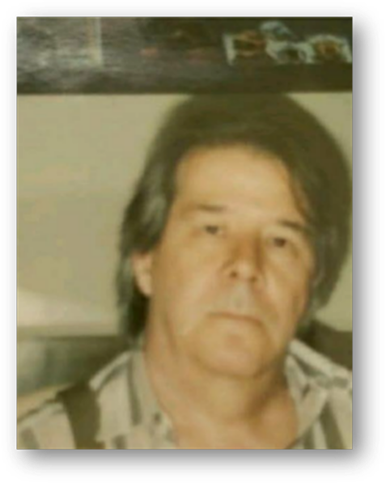Com a transição de liderança consolidada, Fernando, Leonardo e Paula Dutra assumem a gestão executiva do grupo, trazendo uma nova visão de futuro.
Iniciam um processo de modernização da estrutura, ampliação do portfólio e reestruturação estratégica da atuação no mercado nacional.
Lançamento da marca própria RacLite, focada em soluções de iluminação portátil profissional para áreas críticas, o grupo também firma novas parcerias internacionais estratégicas: com a NightSearcher (Reino Unido), referência em lanternas de alto desempenho, e com a B&W Cases (Alemanha), especializada em cases de proteção ultrarresistentes.
Nesse mesmo ano, é inaugurada a primeira filial internacional em Miami, EUA, marcando o início da presença global do grupo.
Nasce a MSE, Mobile Solution Expert, inicialmente focada em soluções móveis de energia solar. A proposta era ousada: substituir geradores a diesel por tecnologia limpa, autônoma e altamente resistente. A MSE inaugura uma nova fase de inovação no grupo, com foco em modularidade e robustecimento técnico.
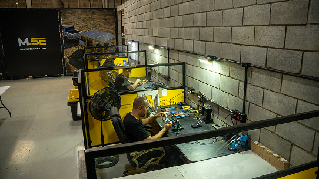A MSE amplia sua atuação com sistemas de comunicação via satélite e projetos personalizados para clientes que operam em locais remotos e de difícil acesso. Com foco em mobilidade, conectividade e automação, a MSE se consolida como um hub de inovação dentro do Grupo Racco.
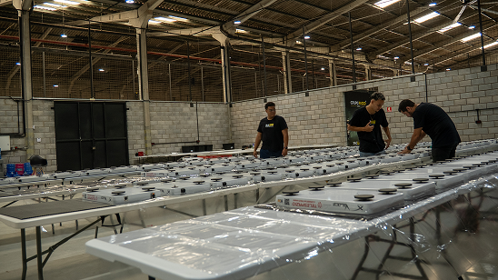O grupo firma uma parceria com a Telespazio, desenvolvendo o Veloce, um terminal de comunicação via satélite com tecnologia embarcada e proteção IP67.
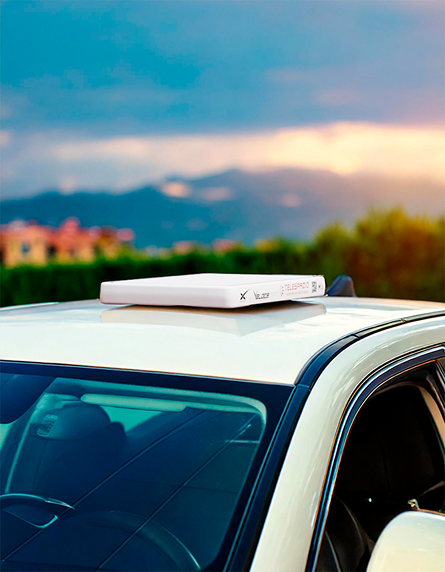Com a demanda crescente por conectividade e automação em campo, a RacTec é consolidada como a divisão de tecnologia do Grupo Racco. Focada em IoT industrial, rastreabilidade e integração com plataformas de gestão, a RacTec leva inovação para operações que exigem visibilidade, controle e inteligência em tempo real.
